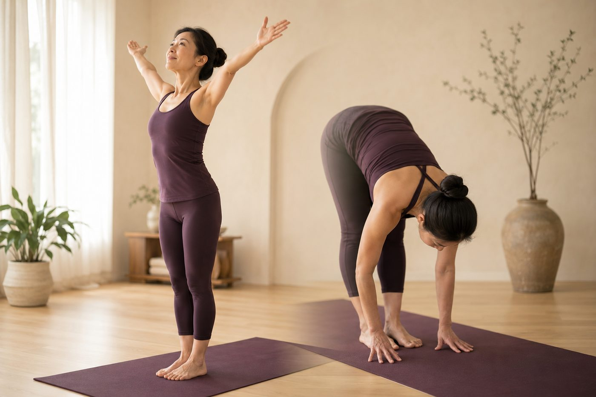

動作配呼吸，該「吸氣做、還是吐氣做」？

上瑜伽課，老師常會說「吸氣打開、吐氣往下」。你可能一邊做一邊偷偷慌：到底哪個動作要吸、哪個要吐？做反了會不會就錯了？先給你一顆定心丸——這件事其實藏著一個很好記的道理，懂了之後你根本不用背，身體會自己知道。
先搞懂一件事：吸氣讓身體「變大」，吐氣讓身體「變小」
要看懂配呼吸的邏輯，得先知道呼吸的時候身體到底發生什麼事。吸氣時，橫膈膜這片主要的呼吸肌會收縮、往下沉，同時肋間肌把一根根肋骨往上、往外撐開，整個胸腔的體積變大，空氣才被壓力差吸進來。這一連串動作，會順勢把你的軀幹「撐長、撐高」，胸口跟著打開、胸椎微微延伸。
吐氣剛好相反：橫膈膜放鬆回升、肋骨往下往內收，腹部的腹橫肌和腹肌輕輕收縮，把肚子往內帶，軀幹的體積跟著變小、往中間收。換句話說，吸氣本身就是一個「往外、往上、打開」的動作；吐氣本身就是一個「往內、往下、收合」的動作。這不是瑜伽發明的規則，是你每分每秒都在發生的身體力學。搞懂這個，後面全通了。想更完整了解呼吸為什麼是瑜伽的核心，可以先看〈呼吸法在瑜伽裡有多重要？〉。
往上、開展、後彎——順著吸氣做
既然吸氣會把軀幹撐長、把胸口打開，那些「往同一個方向去」的動作，當然就順著吸氣做最省力：
- 雙手往頭頂上舉、往上延伸——吸氣。
- 擴胸、把肩膀往後打開、開胸的動作——吸氣。
- 後彎、往後仰、讓胸椎延伸的動作——吸氣。
- 從彎著的姿勢「拉長脊椎、站直」回到中立——吸氣。
道理很單純：這些動作要的就是「延展、打開、往上」，而吸氣時你的橫膈膜下沉、胸腔撐開，等於身體已經幫你把一半的工做好了。你只是順著那股往外撐的力氣，把動作接著做出來而已。逆著來——憋著氣硬做開胸或後彎——你會覺得胸口悶、卡卡地使不上力，因為你在跟自己的呼吸力學打架。以後彎為例，吸氣把胸腔充飽、胸椎自然延伸，脊椎一節節被拉開，你在這個「有長度」的空間裡再往後彎，力量才會分散開來，不會全擠在下背那一小段。
吸氣是身體天生的「打開鍵」，吐氣是天生的「放鬆鍵」——動作往哪個方向去，就配哪一口氣。
前彎、扭轉、往下收——順著吐氣做
反過來，凡是「往內收、往下摺、往中間擠」的動作，就配吐氣：前彎、摺髖往下、扭轉、把膝蓋抱向胸口、收核心捲起來，都是吐氣做。這裡有兩個很實在的理由。
第一個是「空間」。前彎時，你的軀幹要往大腿靠過去；如果胸腔和肚子還鼓鼓地裝滿空氣，它們會卡在你和大腿中間，擋住去路。先把氣吐掉、把肚子和胸口收扁，前面清空了，你才摺得下去、摺得更深。扭轉也一樣，吐氣讓肋廓收窄，脊椎才多出一點空間可以轉過去。
第二個理由更關鍵，也是很多人沒發現的：吐氣的時候，肌肉比較願意放鬆。你的自律神經分成兩邊，一邊像油門（交感）、一邊像煞車（副交感）。慢慢地把氣吐長，會偏向啟動踩煞車的副交感神經，心跳微微降下來，肌肉收到「安全、可以鬆了」的訊號。所以同一個伸展，在吐氣時做，肌肉的抵抗比較小、比較肯讓你多走一點。這就是為什麼老師常說「吐氣，再往下一點點」——不是喊口號，是真的有生理根據的。
別把它背成鐵律，最該守住的其實是「不要憋氣」
講到這裡，先幫你把緊張感拿掉：上面全部都是「通則」，不是考試的標準答案。真實的身體不會每次都乖乖對齊，有些動作介在中間、有些人的節奏本來就不一樣，順著你自己覺得順的呼吸走，遠比死守規則重要。
真正會扣分的，其實只有一件事——憋氣。很多人一遇到吃力的動作，會不自覺把氣憋住、閉氣硬撐。憋氣會讓胸腔壓力飆高、血壓跟著上衝，全身肌肉一起繃緊，反而更容易受傷，動作也更僵。如果這篇你只能記一條，那不是「哪個吸、哪個吐」，而是「不管做什麼，讓呼吸一直流動、不要停」。很多人一專心就忘記呼吸，這時候與其背口訣，不如先把〈練習時總是憋氣？先學會腹式呼吸〉練熟，更有用。
還有一個常見疑問：如果一個姿勢要停留好幾個呼吸呢？那就不必配單一口氣了——進入和離開動作的「那一下」配呼吸，停在裡面時順順地呼吸就好，每一次吐氣還能試著再沉一點點。壁繩在這裡幫的忙，正是讓你「不必憋氣」：當你抓著繩子、把體重交給繩子的支撐，肌肉不用那麼吃力地撐著你，呼吸就不會被你繃著卡住——因為人一使勁、一害怕，第一個停掉的往往就是呼吸。繩子把負擔接走，你才有餘裕把注意力放回那一吸一吐上，動作反而更深、更穩。
與其記口訣，不如先看清楚你的呼吸卡在哪
來教室做一次 AI 體態檢測（現場做），老師會實際看你呼吸時肋廓打不打得開、是不是習慣聳肩憋氣，再帶你把呼吸重新接回動作裡的正確順序。
加 LINE，預約檢測（首次 $199）→今天可以先記住的一件事
把複雜的規則收成一句就好：打開、往上的動作配吸氣；摺疊、往下、扭轉的動作配吐氣；而不管做什麼，都不要憋氣。說到底，你只是順著呼吸本來就在做的事去動而已。剛開始需要一點刻意去對齊，練個幾次，身體就會慢慢抓到那個節奏，變成不用想的直覺。別急著追求一次到位，順順地、一口接一口把氣留住，方向對了，呼吸和動作自然會愈走愈合拍。
本頁為體態與姿勢的一般衛教與練習分享，非醫療診斷或治療。若有疼痛、舊傷或特殊病史，請先諮詢合格醫療專業人員。